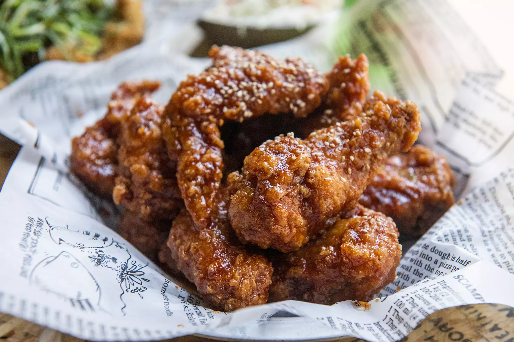

Chicken

Korean Fried Chicken
- 1 lb of chicken thighs
- Rice Wine
- Gochujang
- Sugar
- Seasonings of your choice
- Prepare chicken thighs in brine for at least 2 hours
- Prepare sauce for chicken by pre-heating pan at low-medium heat
- Add in the following: Gochujang, Sugar, and rest of Seasonings
- Combine chicken and sauce in pan and enjoy!
This is a recipe on how to make Korean Fried Chicken. This recipe has been passed down by generations and is a staple for Korean culture.